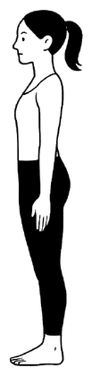
타다아사나
산자세
Tāḍāsana
타다 산
수리야 나마스카라 A 티칭 실습, 런지 묶음, 센터링, 질의응답, 다음 주 과제
부진 선생님 큐잉을 들으며 직접 동작해 봄 (티칭 실습 아님)
피트니스 GX, 기업 강의, 소그룹, 1:1 등 어디서나 쓸 수 있는 기본 방식. 마음에 대한 긴 이야기가 어울리지 않는 곳이나, 수업 시간이 짧아 특정 주제를 나누기 어려울 때 사용. a~d 순서로 진행
Q. 센터링은 온전히 경험하면서 해야 하는데, 불가피하게 강사의 마음이 잡히지 않을 때는? (예은 선생님)
A. "60분간 아무 일도 일어나지 않는다"
월~금 매일 과제 (토·일은 교육에 집중)
과제마다 ① 녹음·녹화 올리기와 ② 셀프 피드백 남기기를 각각 해야 함 (과제 하나당 2가지)
| 과제 | ① 녹음·녹화해서 올리기 | ② 셀프 피드백 남기기 |
|---|---|---|
| 녹음 1 118~119p | 수리야 나마스카라 A 3세트에 이어서 다리가 앞뒤로 있는 런지 묶음 큐잉 | 잘한 점, 성장한 점 |
| 녹음 2 97p 하단 | 일반 센터링 예시 스크립트 | 잘한 점, 성장한 점 |
| 녹화 1 5분 명상 | 앉아서 들고나는 호흡 느끼기 (숨이 들어오고, 내쉴 때 빠져나가는 것 알아차리기). 타임랩스로 촬영, 얼굴은 안 나와도 됨 | 잘한 점, 성장한 점 (예: 5분간 내 마음이 어떻게 움직였는지 등) |
명상 시간은 앞으로 조금씩 늘려갈 예정
감사함과 불안, 아힘사, 명상, 습관화된 마음, 아비야사와 바이라기야를 정리했어요. 동기 선생님이 정리해 주신 필기를 바탕으로 했어요.
내가 체화된 불안이라면 이 순간을 어떻게 경험할까
(내 존재의 근원이) 내가 사랑이라면 이 순간을 어떻게 경험할까
What would love do
불안해하느라 뭘 놓치고 있진 않을까?
'왜 저래' 하면서 거리 두기
'너도 편안하기를' 하면서 거리 두기
교재 290p 요가의 8단계(야마)에서 아힘사를, 103p에서 아힘사를 주제로 한 센터링 예시를 볼 수 있어요.
파탄잘리가 요가수트라에서 "아비야사, 바이라기야를 해야 한다"고 말함
교재 76~77쪽 명상(MEDITATION)을 교재 내용과 수업 필기로 정리했어요. 직접 필기한 내용과 세부 내용은 다시 확인해 보세요.
명상에는 다양한 수련 방식이 있다.
중요한 것은 이러한 다양한 방법을 통해서 주의를 훈련하고, 지혜를 개발하는 것이 명상의 목적이라는 것.
명상은 주의를 통해 경험을 바라보는 방식과 존재의 태도가 변화하는 과정이다. 기본적인 명상 수련은 다음 흐름으로 진행된다.
사다나: 요가 수행자가 습관적인 나를 넘어가기 위해 습관적으로 진행하는 수련. 아사나 수련, 만트라 자파, 명상, 경전 공부, 박티요가, 카르마요가 등이 모두 사다나의 일부가 될 수 있다.
타인과 세상을 향한 헌신과 사랑의 수련
결과에 대한 집착 없이 주어진 의무를 다하는 행위의 수련
중요한 것은 주기적으로, 의도를 가지고 하는 수련이라는 것.
수업 전 다양한 이유로 마음이 반응하고 있을 수 있다. 습관적인 마음을 너머서, 신성한 의도를 세우기.
습관적인 마음은 '내가 좋은 선생님인가 아닌가'를 끊임없이 고민하며 '나'를 중심에 둔 생각을 한다. 하지만 모든 가르침은 투명해진 존재로서의 나를 통해서 나옴을 기억하기.
선생님은 자신의 마음에 다양한 경험들이 오고 갈 수 있다는 것을 명확히 기억해야 한다. 그 경험들을 있는 그대로 보고, 머물도록 허락하고, 가야 할 때 보내줄 수 없다면 나의 티칭 및 모든 영역에 영향을 받을 수 있음을 기억해야 한다. 티칭 전, 중, 후에 마음 공간에 찾아오는 다양한 경험을 바라보는 연습을 하며, 그 바라볼 수 있는 공간으로 돌아와야 함을 기억하기.
실제 방법론은 센터링 부분과 주제가 있는 수업 안내에서 배울 예정
주의를 몸과 호흡으로 가져오고, 현재에 머무를 수 있도록 돕는다. 개입하지 않고, 동일시하지 않는 자리에서 경험을 바라보는 방법을 센터링을 통해 안내한다.
아사나를 수행하는 동안 감각, 호흡, 내적인 움직임을 알아차리도록 안내한다.
수련의 경험을 다시 한번 돌아보고, 수련을 통해 배운 것들을 가슴에 기억하게 해 주며, 일상에서도 명상의 수련을 이어 갈 수 있도록 안내한다.
현대 요가를 만든 스승들(교재 298~300쪽)과 요가의 8단계(교재 290~292쪽, 삼매까지)를 교재 내용과 수업 필기로 정리했어요. 직접 필기한 내용과 세부 내용은 다시 확인해 보세요.
지도로 북부 리시케시(스승: 시바난다)와 남부 마이소르(스승: 크리슈나마차리아)의 두 흐름을 봄 (301쪽 지도)
야마부터 삼매까지. 8단계는 계단이 아니라 수레바퀴(피자)
1920년대 인도 국민주의 운동은 인도인과 영국 사이의 긴장이 고조되는 가운데 인기를 끌었다. 체력관리에 대한 국제적인 관심도 높아졌다. 이 모든 요소들이 합쳐져서 하타요가에 대한 관심을 되살렸다.
현대요가는 미국과 유럽에 도착했던 초기의 힌두 성직자들로부터 시작되었다. 1893년 스와미 비베카난다는 시카고에서 개최된 세계 종교 의회에서 인도와 힌두교를 소개했고, 이후 요가는 명상적-영적방향, 하타요가를 상업화한 동작 중심적 방향으로 전개되어 왔다.
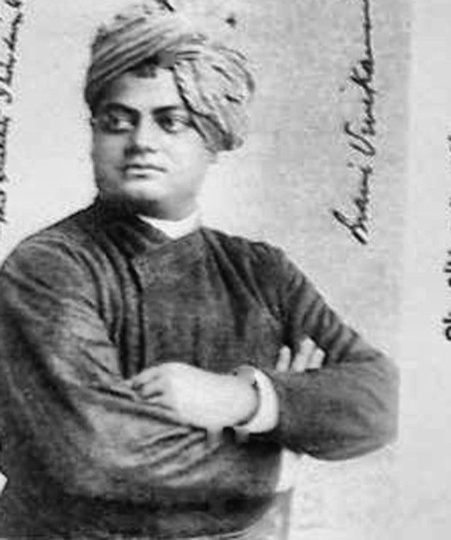
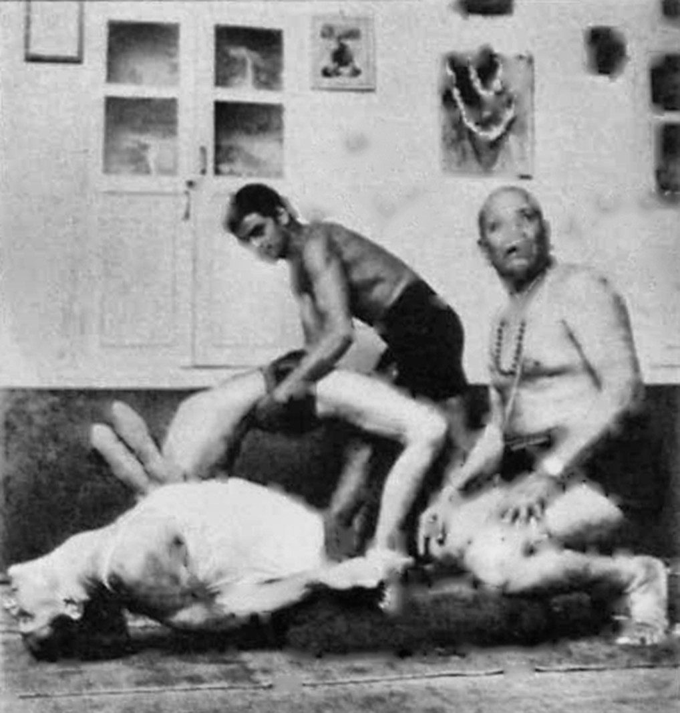
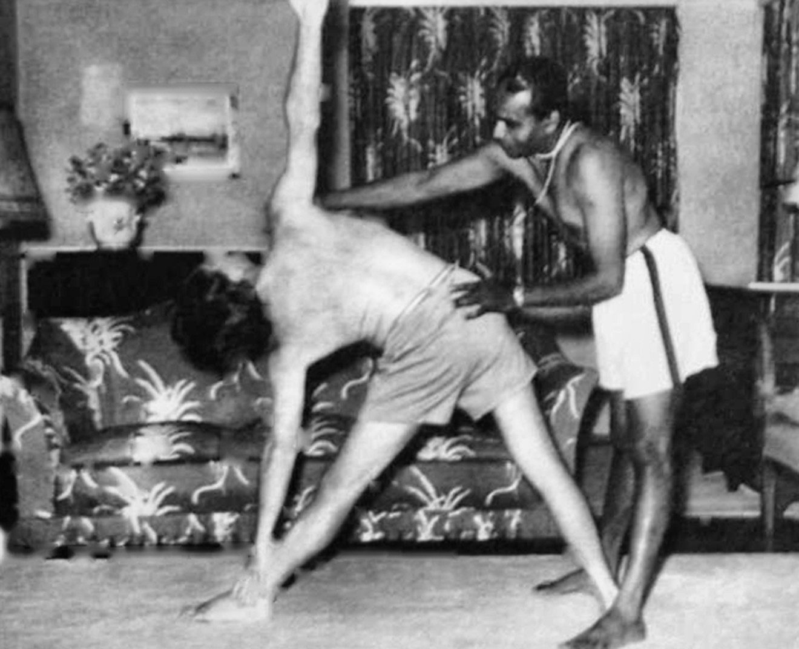
참고(교재 밖): 리시케시는 히말라야 산기슭, 갠지스강이 산에서 평야로 내려오는 곳에 있는 도시로, 아쉬람이 많이 모여 있어 '요가의 수도'로 불림. 시바난다는 1924년 이곳에 자리 잡고 1936년 Divine Life Society를 세움. 시바난다 요가는 더 영적인 스타일로 알려짐
참고(교재 밖): 1933년 마이소르 왕(마하라자)의 후원으로 궁전 한쪽에 요가 학교를 열고 젊은 학생들을 가르침. 아엥가, 파타비 조이스, 인드라데비가 이곳에서 배움. 교재 299쪽 "1930~1950s 마이소르: 젊은 학생 대상, 강한 아사나"와 같은 시기
참고(교재 밖): 크리슈나마차리아는 바다를 건너 해외에 나가지 않았고, 제자들을 통해 서양에 퍼짐(Yoga Journal "Krishnamacharya's Legacy"). 시바난다는 출가 전 말레이시아에서 의사로 일했지만, 요가를 가르친 곳은 인도(Divine Life Society)
크리슈나마차리아와 제자들남부 마이소르
참고(교재 밖): 엔지니어로 일하다가 1960년대부터 아버지에게 배움(Wikipedia "T. K. V. Desikachar")
시바난다와 제자들북부 리시케시
참고(교재 밖): 인드라데비는 적은 수의 아사나를 천천히 하는 부드럽고 편안한 요가를 가르침(Wikipedia "Indra Devi")
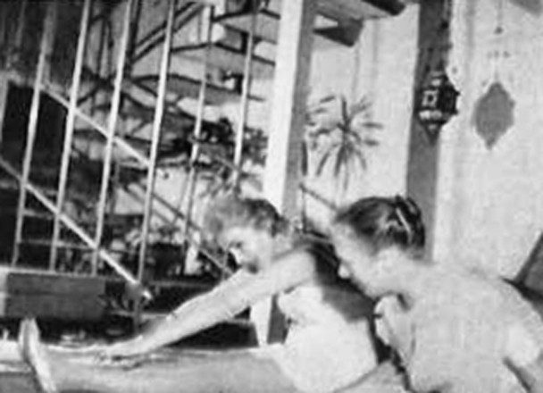
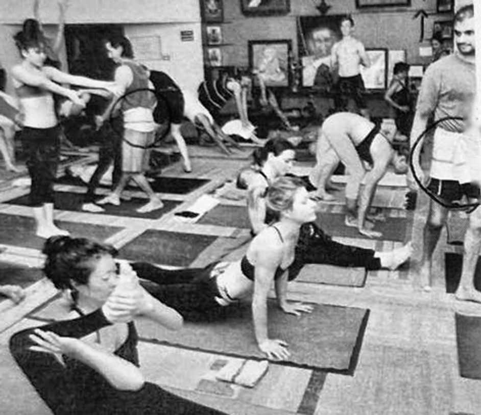
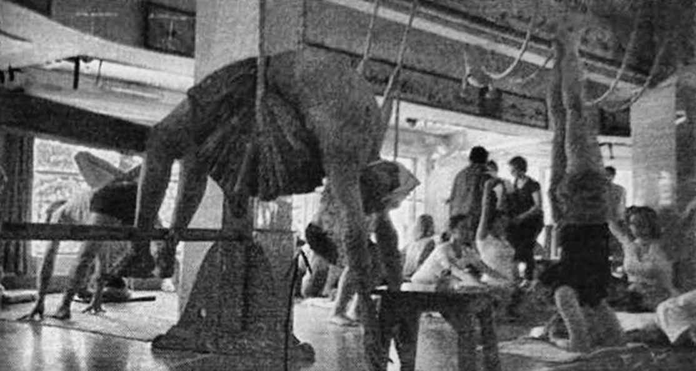
참고(교재 밖): 시바난다 요가 교사 과정은 지금도 노란 상의와 흰 바지를 입음. 노랑은 지식(진리)을 찾는 마음을 뜻함(sivanandabahamas.org)
참고(교재 밖): 1984년 샤론 개넌, 데이비드 라이프가 만듦(Wikipedia "Jivamukti Yoga")
바큇살이 8개인 수레바퀴를 한번 떠올려 보라. 살이 한 개라도 빠지면 수레가 온전하게 굴러갈 수 없듯이, 요가 수행에서도 어느 하나라도 소홀히 하게 된다면 제대로 된 수행의 결실을 맺지 못한다.
베이지 = 지켜야 할 윤리와 규율 · 하늘색 = 신체적 수행 · 회색 = 심리적 수행
| 이름 | 교재 | 수업 필기 |
|---|---|---|
| Ahiṃsā아힘사 | 비폭력: '생각이나 말, 행위로 해가 되기를 바라지 않는 것'으로부터 친절함, 평화로움, 모든 존재에 대한 사랑 | |
| Satya사티야 | 진실성: 아힘사와 사티야는 병행되어야 한다. 진실은 거칠거나 폭력적이어서는 안된다. 우리는 진실을 이야기해야하지만 가능한 한 유쾌하게 상냥하게 해야한다. | 진실의 말은 아힘사를 꼭 가지고 있어야 한다 |
| Asteya아스테야 | 훔치지 않기: 그럼 무엇을 훔치고 있나요? 물건, 생각, 꿈 등. 우리가 훔치는 모든 경우에 우리는 타인이 아닌 자신을 주인공으로 만든다. | 대화할 때 상대방의 말을 가로채는 것도 훔치는 것에 해당됨 |
| Brahmacharya브라흐마차리야 | 절제: 승려에게는 금욕을, 기혼자에게는 배우자에 대한 정절을 의미. 음식이든 일이든 운동이든 잠이든 우리가 무언가를 지나치게 할 때는 삶의 신성함을 망각했기 때문인 경우가 많다. | |
| Aparigraha아파리그라하 | 무소유: 집착하지 않음, 붙잡지 않음, 지나치게 탐하지 않음 → 놓아버릴 수 있음 | 두 번 세 번 같은 결과를 기대하는 것 역시 집착임 |
| 이름 | 교재 | 수업 필기 |
|---|---|---|
| Śauca사우차 | 순수 / 청결: 우리의 몸, 생각, 마음을 정화. 정화해야 하는 마음의 6가지 특성: 욕망, 화, 망상, 탐욕, 오만, 질투 | 불필요한 것을 덜하는 것 |
| Saṃtoṣa산토샤 | 만족: 불만족의 경험을 기회로 / 감사함의 상태로 전환해보자. | 어느 정도가 만족인지 ṃ은 n으로 쓰기도 함 |
| Tapas타파스 | 고행: 유리가 차가울 때 억지로 모양을 바꾸려들면 산산조각 나지만 열로 유리를 녹이면 얼마든지 구부리고 형태를 잡아 원하는 모양으로 만들 수 있다. 두려워 달아나는 대신 미지와 불쾌함에 머무르는 능력을 키운다. | 단어가 '열'을 뜻함 외부 상황이 아무리 힘들어도 흔들리지 않고 단단한 내면을 유지할 수 있는 것 |
| Svādhyāya스와디야야 | 자기탐구: 자기 자신을 향해 길을 걷는다 | 내가 나를 궁금해하는 것, 내가 나를 알아가는 것 |
| Īśvara- praṇidhāna이슈와라 프라니다나 | 귀의(모든 행위의 결과는 신에게 내맡김) → 허용. 우리는 자신이 원하는 것을 요구하며 이 순간과 전쟁을 벌이기 일쑤다. | 허용, 수용 내가 최선을 다해 보고, 이후의 결과는 내맡김 |
"sthira sukham āsanam." (Yoga Sutras 2.46) · sthira 안정됨, sukha 편안함(행복), su 좋은, kha 공간
| ③ Āsana아사나, 좌법 | 좌법은 안정되고 편안하다. 처음에는 이 아사나가 불편하고 견디기 힘들게 느껴지기도 한다. 그러나 어느 정도 훈련이 되면, 육체를 동일한 자세로 유지하려는 노력이 최소화된다. 그 자세를 하려는 노력은 사라져야 하고, 명상 자세는 자연스러워져야 한다. 그래야만 아사나가 집중에 도움이 된다. |
| ④ Prāṇāyāma프라나야마, 호흡법 | 그 좌법이 완성됐을 때, 들숨과 날숨의 움직임을 멈추는 것이 호흡법이다. |
| ⑤ Pratyāhāra프라티아하라, 감각의 제어 | 거북이가 동서남북의 사방으로부터 네 발을 거두어들이듯, 감각의 대상들로부터 감각을 거두어들인다. |
요가 수행의 목적은 마음 작용을 억제시키는 것이다. 이러한 의식 작용들을 일어나지 않게 하는 것이 심리적 수행이다. 이것이 요가의 핵심이고 라자요가 Rāja Yoga라고 한다.
집중, 명상, 삼매, 이 셋은 하나의 대상에서 일어나기 때문에 종합명상이라 한다. 그러므로 이 셋은 개념적으로는 분리해서 이해할 수 있어도, 실제 수행에서는 집중에서부터 삼매에 이르기까지 한 순간의 틈도 없이 이어져 있다. 그리고 이 셋을 통달함으로써 직관적인 지혜가 나온다. (Yoga Sutras 3.4~3.5)
| ⑥ Dhāraṇā다라나, 집중 | 마음을 한 곳에 고정하는 것 |
| ⑦ Dhyāna디야나, 명상 | 집중된 대상에 대한 관념이 지속하는 상태 / 수행자의 의식에 대상이 아직 남아 있다. 이러한 의식이 남아 있는 한 마음 작용은 계속된다. |
| ⑧ Samādhi사마디, 삼매 | 주관적 자신은 없는 것처럼 객관적 대상만이 마음속에서 빛나는 상태 (더 이상 다른 마음 작용이 일어나지 않는) |
이전 수업과 연결: 10/31 아힘사(오늘 야마의 첫 번째) · 11/7 명상(오늘 ⑦ 디야나) · 11/1 프라나야마(오늘 ④)
첫째 시간에 배운 사트 치트 아난다(존재, 의식, 지복)를 수업 중 메모로 정리했어요. 교재에는 없는 내용이라, 직접 필기한 내용과 세부 내용은 다시 확인해 보세요.
하루를 어떻게 경험할지는 아침에 눈떠서 내가 결정할 수 있음. 감사한 마음으로 하루를 시작해 보기
생각이 일어나지 않는 순간을 연습하기. 의식이 요동치지 않고 고요한 순간들이 있고, 그것을 만들어야 함
일어나는 생각을 막는 것
'지금 내가 그 생각을 또 하고 있구나' 하고 아는 것
요가 철학 시간에 배운 요가의 뜻과 다섯 경전(베다, 우파니샤드, 바가바드기타, 요가수트라, 하타요가프라디피카)을 교재 내용(284~289, 292~293쪽)과 수업 필기로 정리했어요. 직접 필기한 내용과 세부 내용은 다시 확인해 보세요.
요가는 수행적인 측면에서 '실천'하는 방법이다. 요가는 인도의 다양한 종교/ 철학에 수용될 수 있었고, 다양하게 발견된다.
전통적으로 인도에서는 특정한 종파나 학파에 상관없이 수행(Bhāvanā)에 전념하는 사람들을 '요가를 지닌 사람(Yogī)' 혹은 '요가를 실천하는 사람(Yogācāra)'이라고 불렀다. 이것이 요가라는 것이 단순히 몸을 비틀거나 만트라를 암송하는 정도에서 그치지 않는다는 사실을 의미한다. 다양한 전통에 따라 전해지는 요가의 가르침은 방대하면서도 체계적인 형이상학적/ 종교적/ 생리학적 내용을 지닌다.
산스크리트 단어 요가(Yoga)는 '결합하다', '[말 등에] 마구를 달다'라는 의미의 동사어근 yuj에서 나온 것으로, 타잇트리야 우파니샤드(Taittirīya Upaniṣad)에서 처음 사용된 것으로 알려져 있다. 요가는 명사로 결합, 통일, 조화, 균형의 뜻으로 널리 사용된다.
파탄잘리(Patañjali)는 요가수트라에서 다음과 같이 요가의 목적을 이야기한다.
요가는 마음의 작용을 억제하는 것이다.
| 요가 | 감각기관, 마음, 지성 등을 억제하여 동요 없는 상태에 이르는 것을 가리킨다. 외부적 여건에 동요하지 않도록 내면의 심리와 정서를 억제하고 다스리는 것이 요가의 의미이다. |
| 마음 | 여기서 '마음'은 우리의 생각, 느낌, 감정 등 모든 정신작용을 포괄하는 넓은 개념. 마음의 작용(활동)을 멈추고 고요한 상태에 도달하는 것이 요가의 목적이다. |
시대적 배경에 따라, 다양한 이름으로, 모습으로 요가를 발견할 수 있다.
인도사상의 가장 오래된 사유의 흔적을 볼 수 있는 철학적 고전. 종교, 철학, 의학, 천문학, 역사 문학 등의 내용을 담는 정신적 지식
신에 대한 찬가, 브라만 사제계급들이 의례(제사)에 사용하는 주문(만트라 Mantra)이 담긴 경전이자 아주 오래된 시집. 엄격한 교육을 받은 사람들의 입에서 입으로(암송) 전해져 왔다.
제사를 맡은 사제가 심령적인 힘을 만들기 위해 소마주(환각제)를 마시고 명상과 사념의 고행을 했던 것으로 나온다. 이때 요가는 사제들의 명상과 고행 Tapas를 의미했고, 소마주를 마시고 올리는 제사는 침묵, 철야, 단식, 고행을 포함한 정화의식이었다.
참고(교재 밖): 가야트리 만트라는 리그베다 3.62.10에 처음 나옴
신성한 말, 소리가 가지고 있는 힘
시간이 지나며, 제사라는 행위에 치우친 해석에 반발한 사람들이 또 다른 해설집을 통해 '제사보다는 그 안에 담긴 의미를 파악하는 것이 중요하다'라며, 베다의 상징을 신이 아닌 인간의 입장에서 해석하고 발전시킨 것이 우파니샤드 The Upaniṣads이다.
자연, 신에 대한 지식에서 출발한 고대 인도인들의 호기심은 우파니샤드의 '범아일여' 사상을 만들어 냈다: 브라흐만(펼쳐진 것)과 아트만(자신의 참모습), 이 둘이 부분과 전체처럼 서로 다르지 않음. 그리고 우파니샤드 이후 체계적인 관점을 공유하는 철학들이 차차 형성되었다. (육파철학 중 요가철학)
| 베다 | 자연, 우주에 대한 탐색 |
| 우파니샤드 | 자아 탐구 (철학자들의 사유, 깨달음, 가르침) |
| 범아일여 | 제각각 삶을 살아가는 이유를 자각하게 하고 스스로 삶의 방법을 발견하게 하도록. 이런 문제의식이 육파철학 등으로 발전. (요가철학은 우파니샤드에 뿌리를 두고 있음) |
upa(다가간다), ni(가까이), sad(앉는다): 자신의 스승 가까이에 앉다
우파니샤드는 모두 108개가 있으며, 가장 큰 주제는 아트만 Ātman, 즉 자신의 참모습을 발견하고, 신이 아닌 인간의 존재(방식)를 고민한다. 다양한 비유, 은유, 상징을 통해 탐구하고 삶을 바라보는 다양한 시각을 제공한다.
| 마차의 주인 | 아트만 |
| 마차 | 육신 |
| 마부 | 지혜 |
| 고삐 | 마음 |
| 말 | 감각들 |
| 말이 달려 나가는 길 | 감각이 좇는 대상들 |
신의 노래라는 대서사시 <마하바라타>의 일부. 700구절로 된 종교적인 내용의 짧은 시집
18일 동안 전쟁이 발단하는 상황. 아르주나 Arjuna는 적군 진영 안에 많은 가까운 친척, 스승, 친구들이 이번 전쟁에 참여하고 있음을 보고 동족 사이의 전쟁임을 깨닫는다. 그 결과로 일어나게 될 일에 두려워하고 절망하며 무기를 버리고 주저앉아 회의에 빠진다. 그에게 크리슈나 Krishna는 육체가 멸망하는 것에 관계없이 불멸하는 자아는 늘 존재하며, 정의의 전쟁은 크샤트리아 계급의 의무(Dharma)임을 강조하며 '일어나 싸우라' 한다.
명상적인 실천뿐만 아니라 윤리적 실천, 철학적 사색, 종교적 헌신 등이 모두 요가의 범주에 포함되었다. 이 경전은 인도의 성경으로 불릴 만큼 인도인들에게 많이 읽힐 뿐만 아니라 인도사상에도 절대적인 영향을 끼쳐 왔다. 그 때문에 현대 인도사상에서도 요가는 철학, 윤리, 종교까지 포함하는 해탈을 위한 수행 일반을 의미한다.
| Karma Yoga카르마 요가 | 결과(이익, 이해관계)를 미리 계산하지 않고 순수한 마음으로 하는 행위의 요가. 이타성을 가진 봉사, 공동체를 위한 헌신 등 |
| Jñana Yoga즈나나 요가 | 지혜로운 마음을 가지기 위해 경전공부나 명상을 통해 정신을 갈고 닦는 것 |
| Bhakti Yoga박티 요가 | 헌신, 박애/ 조건 없이 순수하게 기도하거나 신을 찬양하고 찬송하는 것처럼 결과에 대한 집착을 버리고 지속적으로 헌신하는 삶 |
배경이 전쟁이다. 인간의 삶 그 자체도 전쟁이다.
크리슈나가 아르주나에게 전쟁터에 나가서 싸우라고 하는 것은 전쟁 같은 삶에 대항하여 싸우되, 마음이 지어내는 '가짜 모습'과 맞서 싸워 이겨서 삶의 '진짜 모습'을 보라는 의미이다. 편견, 무지 등에 맞서 세 가지 요가를 얼마나 진정성 있게 실천하며 살아가는가에 따라 진정한 자유를 쟁취할 수도 있고 그렇지 않을 수도 있다.
4장 195절로 이루어진 짧은 경전
이렇게 포괄적인 의미를 지닌 요가가 요가 고유의 철학을 갖추게 된 것은, 기원후 4~5세기경 요가 경전인 요가수트라가 성립되면서부터이다. 파탄잘리 Patañjali가 오래전부터 행해져 왔던 요가의 기법과 사상들을 수집하고 선택하여 그 나름대로 종합하고 체계화하였다. 수행체계는 윤리적인 계율, 육체 조절, 의식 집중의 단계로 8단계로 되어 있고 여전히 현대 요가의 대부분의 스타일에 강한 영향을 미친다.
장애가 구름처럼 앎을 가리면, 우리는 앎의 순수한 장이 아니라 구름을 자신과 동일시하게 된다.
| Avidyā | 무지 |
| Asmitā | 자신에 관한 이야기를 지어냄 |
| Rāga | 즐거운 것에 집착함 |
| Dveṣa | 불쾌한 것에 집착함(혐오) |
| Abhiniveśā | 소멸을 두려워함(죽음에 대한 두려움) |
요가는 고통에 대해 낙관적이며, 고통을 지나치게 강조하지 않는다. 그보다는 세 가지 행위를 함으로써 적극적으로 고통을 해결할 수 있다고 말한다. 크리야요가라는 준비 단계의 수행은 우리가 의도적인 행동과 말, 생각을 점차 알아차리게 되면, 대응하는 대신에 반응하는 법을, 행동과 말과 생각을 이용하여 성찰하고 지켜보는 방법을 점점 더 통찰할 수 있게 한다.
세 가지의 뜻은 11월 8일 수업 정리의 ② 니야마(타파스, 스와디야야, 이슈와라 프라니다나)에 있어요.
참고(교재 밖): 하타요가의 쿤달리니·차크라 개념도 탄트라 전통에서 들어옴.
하타요가는 탄트라 Tantra의 영향을 많이 받았다. 요가에서 육체란 영혼이 잠시 머물다 가는 한시적인 거주처. 신이 거주하는 육체를 쓸고 닦고 기름치고 하는 일, 이것을 하타요가라고 부른다.
하타(Haṭha)라는 단어는 명사로서는 '강력한 힘'이라는 의미가 있고, 형용사로는 '무리하다' 또는 '부자연스럽다'라는 의미가 있다. 그래서 이 하타요가라는 단어에는 기본적으로 '강한 힘과 무리할 정도의 노력이 동반되는 고행적인 수행'이라는 의미를 함축하고 있다. 또한 이러한 수행을 통해서 강한 육체를 만든다는 의미도 있다. 이러한 하타요가의 의미를 게란다상히타(Gheraṇḍa Saṃhitā)에서는 '불에 굽지 않은 도자기는 바로 물에 풀어지고 만다. 그러니 먼저 요가의 불로 육체를 정화해야 한다.'고 하였다.
정지된 상태로 일정시간을 유지한다. 호흡에 맞춰서 하고, 자신 내부에 의식을 집중한다.
서양 체육의 목적은 몸을 움직여서 각 기관에 자극을 주거나, 혈액 등을 순환시켜서 건강을 증진시키고자 하는 것이다. 하타요가에도 이러한 점이 없는 것은 아니다. 그러나 하타요가의 근본목적은 생명의 근원이 되는 기를 생성하고, 운행하고, 조화를 이루는 것이다.
하타요가의 수련법은 요가자세, 호흡수련, 무드라이다. 스와트마라마(Swatmarama)가 저술한 책으로 13세기부터 인도 전역으로 확산되고, 하타요가프라디피카에 의해 수련체계가 완성되고 그 뒤에 주류의 수련법으로 정착된다.
수행자가 지켜야 할 것 중에 제일 강조한 것은 음식절제
교호호흡: 나디를 청소하는 매우 유용한 방법이다
| paścimatānam등펴기자세 · 1.28, 29 | 바닥에 양발을 똑바로 뻗고 앉아 양손으로 양 엄지발가락을 잡고, 무릎 위에 이마를 대고 움직이지 않고 참는 것이다. 등펴기자세는 자세 가운데서 으뜸으로 척추에서 곧바로 쿤달리니 에너지를 일깨워서 수슘나 나디를 통과하게 된다. 또한 위 속의 소화의 불을 증대시키고, 허리를 가늘게 해 주며, 수행자를 건강하게 해 준다. |
| siddhāsanam달인자세 · 1.35 | 왼 발꿈치를 회음부에 대고 오른 발꿈치를 생식기 위에 단단히 고정시킨다. 턱을 가슴에 닿도록 바짝 끌어당기고 상체를 곧게 세운다. 모든 감각을 외부 대상에서 안으로 돌리고, 시선은 미간을 응시하라. 이것이 해탈의 문을 열 수 있는 달인자세다. |
| Prāṇāyāma호흡 · 2.2 | 호흡이 움직일 때는 마음도 따라 움직인다. 호흡이 움직이지 않으면 마음도 움직이지 않는다. 요가 수행자는 흔들리지 않는 마음에 도달해야 하는데, 그러기 위해서는 호흡을 조절할 수 있어야 한다. |
| 나디의 정화교재 표기 2.2 | 나디가 청소되어 정화될 때 그때 분명히 몸이 가볍고 혈색이 좋아지는 것과 같은 몸 밖으로 표시가 나타날 것이다. 참고(교재 밖): 원전 번역에서는 2.19절 |
이전 수업과 연결: 11/8 요가의 8단계와 타파스·스와디야야·이슈와라 프라니다나(오늘 크리야요가) · 11/7 명상(오늘 마음의 작용 억제) · 11/14 "요가는 내가 누구인지, 내가 누가 아닌지를 이해하고 싶어 하는 것"(오늘 우파니샤드 마차 비유)
후굴 자세 네 가지(댄서, 비둘기, 호랑이, 휠)와 하타·빈야사 시퀀싱 비교, 이번 주 아사나 과제를 정리했어요. 직접 들은 내용과 세부 내용은 다시 확인해 보세요.
준비 연습: 팔을 귀 옆에 붙이고 뒤통수로 팔을 밀며 명치 끌어올리기 (팔은 따라옴)
| 빈야사 | 하타 | |
|---|---|---|
| 핵심 | 자세를 엮어 계속 연결 | 한 자세에 1~5분 이상 머물며 관찰 |
| 자세 사이 | 빈야사(차투랑가 → 업독 → 견상)로 이어 감 | 보통 그 자리에서 발 방향만 바꿔 다음 자세로 |
| 쉬는 곳 | 끊김 없이 가다 보통 마지막 이완에서 쉼 | 어려운 자세 뒤 쉬며 매듭 (발라·마카라·사바아사나 등) |
찬드라 나마스카라(몸 앞면 열기) → 전사 1·2·3(둔근·하체 힘) → 아쉬와 산찰라나(허벅지~가슴 앞면 풀기) → 견상
척추·어깨 깨우기테이블 → 소·고양이(척추 분절) → 엉덩이 든 고양이 자세(양손 만세, 팔꿈치 열리지 않게 어깨 인지)
피크 준비우르드바 다누라아사나
쿨다운호흡 → 테이블 → 소·고양이(척추 분절) → 견상 → 수리야 나마스카라 3~5세트(수업 길이에 따라) → 견상
흐름 끊지 않고 이어 감, 한 번 더 반복해도 됨숩타 비라아사나로 몸 열기 → 세투 반다 → 우르드바 다누라아사나
도전 자세는 흐름 안에 넣을 필요 없음. 하타처럼 끊어 가도 됨
마무리비틀기 → 할라아사나 → 사바아사나
그림은 교재 아사나 그림(동작·뜻 사전, 런지 묶음 큐잉)에서 가져왔어요. 교재에 그림이 없는 동작은 이름만 넣었고, 그림을 누르면 크게 보여요.
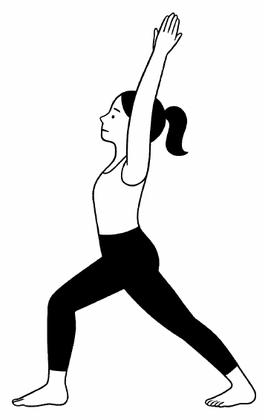
전사 1둔근·하체 힘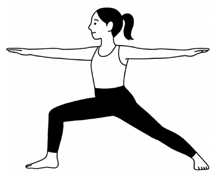
전사 2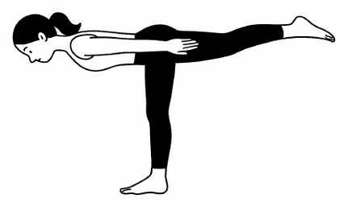
전사 3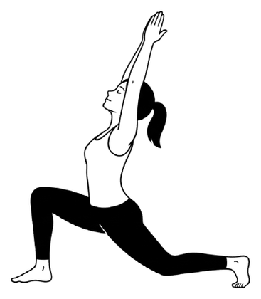
아쉬와 산찰라나허벅지~가슴 앞면 풀기그림: 로우런지(41쪽)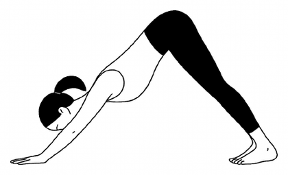
견상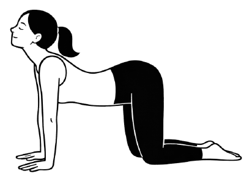
소척추 분절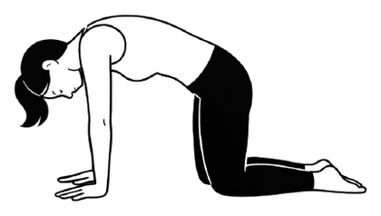
고양이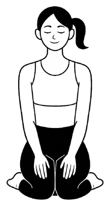
비라아사나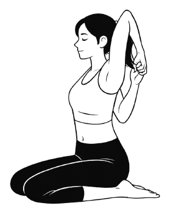
고무카아사나팔꿈치 모으고 어깨 뒤로·아래로, 앞가슴 열기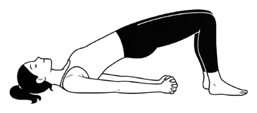
세투 반다우르드바 다누라아사나 준비 자세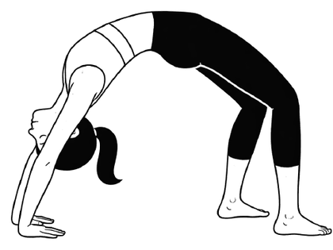
우르드바 다누라아사나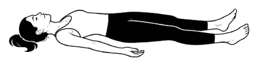
사바아사나잠시 휴식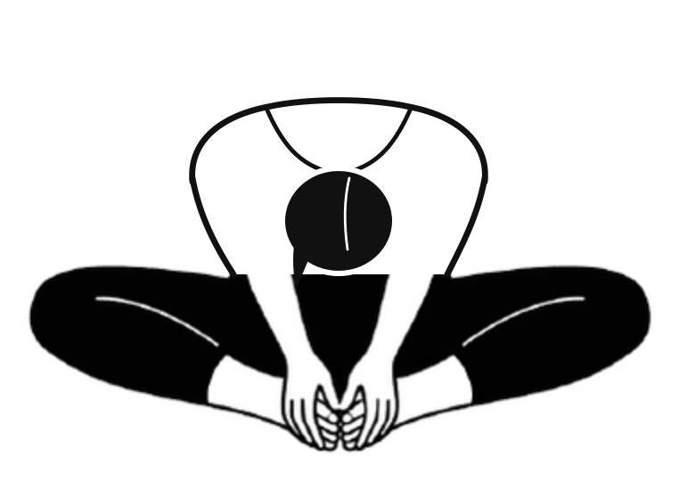
받다코나아사나앉은 전굴: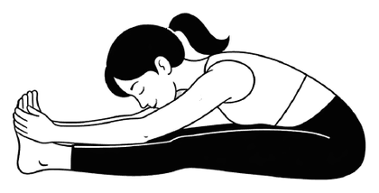
파스치모타나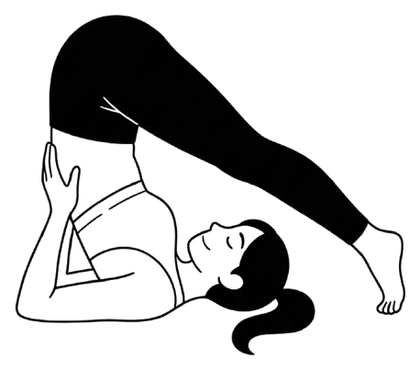
할라아사나사바아사나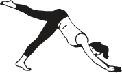
에카 파다 견상오른 다리를 뒷벽으로 뻗어 올리기그림: 세 다리 견상(118쪽)아쉬와 산찰라나그림: 로우런지(41쪽)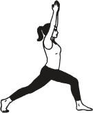
하이런지손 풀고등 뒤 깍지카운트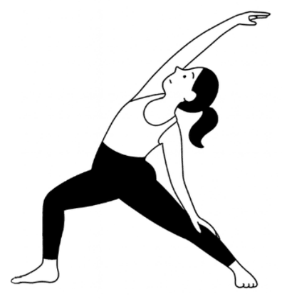
역전사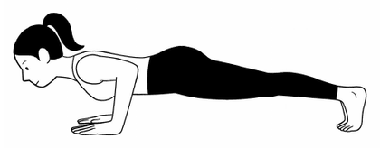
차투랑가풍차 돌리듯 내려와 빈야사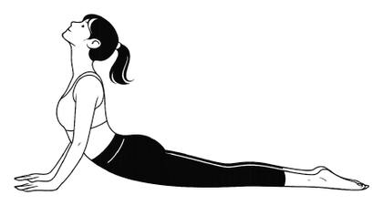
업독견상→ 반대쪽
피크 흐름이 끝난 뒤 따로도전 자세는 흐름 안에 넣을 필요 없음. 하타처럼 끊어 가도 됨
마무리빈야사만 했다면 하타를, 하타만 했다면 빈야사를 직접 수련해 보기
교재 18~39쪽, 33개
피크포즈 나타라자아사나로 하타 버전과 빈야사 버전을 짜는 과제예요. 단계마다 필요한 교재 내용(53~72쪽)과 수업 내용을 모아 두었으니, 책을 펴지 않고 순서대로 따라가며 직접 짜 보세요. 시간(60분, 90분)은 정하지 않아도 되고, 흐름을 점진적으로 짜 보면 돼요.
적은 답은 이 기기의 브라우저에만 저장되고, 다른 선생님께는 보이지 않아요.
교재 58쪽은 하타 시퀀싱에서 피크포즈를 해부학적으로 분석해 강화할 곳 / 열어 줄 곳 / 활성화할 곳으로 나누라고 해요. 수업에서도 이 자세에 어떤 힘이 쓰이는지, 어떤 근육을 풀고 어떤 근육을 강화해야 하는지 먼저 생각하라고 하셨어요. 이 분석이 하타와 빈야사 두 버전의 공통 재료가 돼요. 아래 입력 칸도 교재의 세 칸을 따랐어요. 선생님 예시의 "수축해 힘을 쓸 곳"을 어느 칸에 둘지는 직접 판단해 보세요.
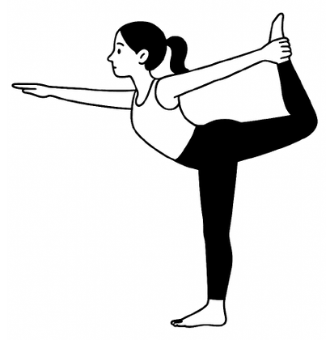
핵심: 지지발 기반이 먼저, 가슴은 정면
참고(교재 밖): 고관절이 뒤로 펴지는 범위는 크지 않아서(보통 5~40°), 무릎 높이만 목표로 하면 허리를 꺾어 보상하기 쉬움. 무릎 높이보다 허리가 눌리지 않는 범위가 먼저 (Elson & Aspinall, 2008, Clin Orthop Relat Res)
교재는 나타라자아사나를 "선자세와 균형자세"(18~27쪽)에 넣었고, 11/22 수업에서는 후굴 자세들과 함께 다뤘어요.
| 풀어 줄 곳 | 어깨 주변, 몸 앞면 |
| 수축해 힘을 쓸 곳 | 등 뒤 |
| 강화할 곳 | 엉덩이와 허벅지, 하체 힘 |
단순히 쓰게만 하는 것이 아니라, 움직임 속에서 수련생이 스스로 몸을 인지할 수 있게 설명해 주기
근육 이름이 필요하면
같은 피크포즈라도 무엇에 무게를 두느냐에 따라 수업의 색이 달라져요. 한 줄로 적어 보세요.
수업에서 "아사나(재료)는 같고, 묶는 방식이 다르다"고 했어요. 교재 57쪽도 두 수련 모두 피크포즈에 필요한 열기, 강화, 유연성, 인지를 단계별로 배치하되, 하타는 개별 아사나(부품)로 준비하고 빈야사는 비넷(덩어리) 안에 녹여 낸다고 해요. 여기서 고른 재료로 Step 4(하타)와 Step 5(빈야사)를 각각 엮어요.
| 단계 | 하는 일 | 교재 예시 |
|---|---|---|
| 1. 센터링 | 주제와 의도 전달, 에너지 상태 확인, 호흡으로 신경계 안정 | 주제·의도 전달, 호흡 안내 |
| 2. 웜업 | 큰 관절과 큰 근육 중심으로 부드럽게 움직여 체온을 높임. 가동 범위를 넓히고 긴장을 완화해 부상 위험을 줄임. 피크 포즈에 필요한 움직임을 미리 준비함 | 소·고양이, 아기 자세, 앉은 비틀기, 측굴, 어깨와 골반을 풀어 주는 동작 |
| 3. 선 자세 | 가장 활동적인 단계. 큰 근육 활성화, 전신의 열, 안정성과 힘 강화. 자세 간 연결성과 흐름을 고려해 배치. 간단한 동작 → 복잡한 동작 → 피크 포즈 | 태양경배 A·B, 태양경배 변형, 선자세, 균형 자세 |
| 4. 피크 포즈 | 수업의 중심. 충분한 준비 동작이 먼저 | |
| 5. 쿨다운 | 피크 포즈 후 긴장된 몸을 점차 중립으로. 정적이고 기초적인 자세로 근육 긴장 완화, 호흡 안정 | 비틀기, 전굴, 이완 자세 |
| 6. 명상 또는 사바아사나 | 최소 5분 이상 확보하는 것이 좋음. 몸과 마음의 변화를 관찰하며 수련의 효과를 통합함 | 신체 감각, 에너지의 변화, 떠오르는 생각과 감정 관찰 |
교재 대표 시퀀스는 준비 자세 옆에 "왜 넣었는지"를 붙여 둬요. Step 1의 칸과 연결해 이유를 쓰는 연습에 참고하세요.
고관절 앞쪽(장요근)과 엉덩이 근육(둔근)을 깊게 이완시켜 골반의 가동성을 확보함. 부장가아사나에서 허리가 과도하게 꺾이는 것을 방지할 수 있게 하체 기반을 만들어 줌
피크포즈(전사 3)에 필요한 복부 힘과 척추의 안정화를 위한 준비 동작
피크포즈(전사 3)에 필요한 한 발로 균형 잡는 동작. 발바닥 균형 감각을 깨워 줌
Lv.0 피크포즈 전사 3에서 또 다른 한 다리로 중심 잡는 자세로 전환해 몸의 균형 감각을 더 깊이 깨워 냄
상체를 바닥으로 낮추는 자세로 몸을 이완시켜 줌
부장가아사나에서 나아가 배를 바닥에 두고 상체뿐 아니라 하체도 같이 뻗어 올리는 움직임으로 이어 감
이름 옆 숫자는 교재 쪽수예요. 그림은 에서 볼 수 있어요.
하타는 피크포즈에 필요한 조건을 개별 아사나로 하나씩 확보해 나가는 방식이에요(교재 58쪽). 하타를 먼저 짜 두면 같은 재료를 빈야사로 옮기기 편할 거예요.
하타에서 빈야사 크라마는 한 자세에 온전히 머물기 위한 육체적, 내적 준비 과정이에요. 동작을 묶기보다 개별 아사나의 고유한 힘과 정렬에 집중하고, 그 자세에서의 내적 관찰을 주 목적으로 해요.
| 준비 단계 | 시바난다 태양경배로 고전적인 정렬을 익히고 정적인 힘으로 몸을 깨움 |
| 개별 아사나 중심 | 하나의 아사나를 독립적인 목적지로 정하고 1~5분 이상 충분히 머묾 |
| 중립화와 회복 | 강한 자극 뒤에는 반드시 마카라아사나 같은 중간 회복 자세를 둬 에너지를 통합함. 빈야사의 '흐름'과 대조되는 하타만의 '매듭짓기' |
| 실전 적용 | 크라마는 '다음 동작으로 가는 길'이 아니라 '이 동작을 더 깊게 하기 위한 예비 단계' |
| 전략 58쪽 | 피크포즈를 해부학적으로 분석해 강화할 곳 / 열어 줄 곳 / 활성화할 곳에 해당하는 아사나를 독립적으로 배치. 동작 사이 중립화로 앞선 아사나의 효과를 충분히 흡수하고 다음 단계로 |
| 빈야사 | 하타 | |
|---|---|---|
| 최소 단위 교재 | 동작의 덩어리 (묶음) | 개별 아사나 |
| 크라마의 방향 교재 | 연결, 유기적인 흐름 | 심화, 한 아사나의 개별적 깊이 |
| 태양경배 교재 | 수리야 나마스카라 A / B | 시바난다 수리야 나마스카라 |
| 시퀀싱 리듬 교재 | 중단 없는 호흡 | 자극과 휴식의 반복 |
| 자세 사이 교재·수업 | 플랭크-차투랑가-부장가아사나-견상으로 이어 감 교재 68쪽 대표 시퀀스 | 보통 그 자리에서 발 방향만 바꿔 다음 자세로 수업 |
| 쉬는 곳 수업 | 끊김 없이 가다 보통 마지막 이완에서 쉼 | 어려운 자세 뒤 쉬며 매듭 (발라·마카라·사바아사나 등) |
피크포즈가 부장가아사나인 예시예요. 괄호 안은 교재의 카운트예요.
66쪽 60~90분 버전은 피크포즈 준비에 비둘기 준비 자세(양손 바닥 짚기 → 상체 바닥으로 낮추기)가 더해지고, "측면 늘리기(3) → 자누시르사아사나(5)"로 적혀 있으며, 일부 카운트가 늘어남
피크가 다른 예시예요. 자세 목록을 옮기지 말고, 자세마다 이유를 붙이는 방식과 쉬는 곳, 묶는 방식을 비교해 보세요.
웜업찬드라 나마스카라(몸 앞면 열기) → 전사 1·2·3(둔근·하체 힘) → 아쉬와 산찰라나(허벅지~가슴 앞면 풀기) → 견상
척추·어깨 깨우기테이블 → 소·고양이(척추 분절) → 엉덩이 든 고양이 자세(양손 만세, 팔꿈치 열리지 않게 어깨 인지)
피크 준비우르드바 다누라아사나
쿨다운수업에서는 찬드라 나마스카라를 깊은 후굴 피크포즈일 때 쓰는 편이라고 하셨어요.
빈야사는 피크포즈에 필요한 요소를 흐름의 덩어리인 '묶음' 속에 자연스럽게 배치하는 방식이에요. 수련생은 흐름을 타는 동안 자신도 모르게 피크포즈에 필요한 근육을 강화하고, 열어 주고, 활성화하게 돼요(교재 57쪽).
빈야사 크라마는 동작과 동작 사이의 연결성으로 구현돼요. 호흡의 리듬이 끊기지 않도록 비슷한 골반의 방향이나 지지점을 가진 동작들을 하나의 묶음으로 배치해요.
| 묶음 | 개요 | 구성 예시 | 특징 |
|---|---|---|---|
| 골반 정면 | 다리가 앞뒤로 열림. 두 ASIS(골반 앞쪽 뼈)가 매트 앞면을 봄 | 전사 1 - 파르스보타나 - 전사 3 - 하이런지 - 로우런지 | 다리 근육의 강한 개입, 척추의 정면 정렬. 에너지를 직선적으로 씀 |
| 열린 골반 | 다리가 양옆으로 열림. 골반이 매트의 긴 옆면을 봄 | 전사 2 - 역전사 - 측각도 - 삼각 | 골반 주변 근육(내전근, 외회전근)을 길게 늘리고 몸의 측면을 확장 |
| 회전 | 중립 비넷에서 척추의 회전을 더함 | 로우런지 - 로우런지 비틀기 | 복부 장기 자극, 척추 가동성. 골반 정면 묶음과 섞어 쓰기도 함 (로우런지 비틀기, 하이런지 비틀기) |
| 한 발 균형 또는 도전 자세 | 비넷의 마지막에 배치해 집중력을 최고조로 | 전사 2 - 아르다찬드라 - 전사 3 - 욷티타하스타 파당구쉬타 | 앞선 묶음들에서 쌓은 열기와 유연성을 바탕으로 고도의 인지력이 필요함 |
전략: 피크포즈의 '골반 방향'과 '필요 근육'을 고려해 3~4개 동작을 하나의 비넷으로 묶어 배치
| 웜업 | 수리야 나마스카라 A/B로 전체적인 열기 |
| 골반 정면 묶음 1 | 로우런지 - 플랭크 - 무릎 대고 차투랑가 손목 예열, 코어 및 전거근 활성화 |
| 골반 정면 묶음 2 | 하이런지 - 전사 3 - 런지 트위스트 하체 안정성 확보, 척추 회전 준비 |
| 열린 골반 묶음 | 전사 2 - 측면 각도 자세 - 리자드 포즈 고관절 외회전, 깊은 열기 |
| 도전 자세 | 에카 파다 코운딘야아사나 앞선 비넷들의 모든 요소 통합 |
교재의 큰 순서와 "설명세트" 흐름이에요. 카운트는 뺐어요.
71~72쪽 60~90분 버전은 웜업에 테이블 변형 자세, 설명세트 처음에 타다아사나 → 브륵샤·가루다아사나, 쿨다운에 받다코나아사나가 더해지고, 이 자세들의 이유에 전사 3을 "피크포즈(전사3)"라고 적어 둠
피크가 다른 예시예요. 자세 목록을 옮기지 말고, 자세마다 이유를 붙이는 방식과 묶는 방식을 비교해 보세요.
웜업호흡 → 테이블 → 소·고양이(척추 분절) → 견상 → 수리야 나마스카라 3~5세트(수업 길이에 따라) → 견상
흐름 끊지 않고 이어 감, 한 번 더 반복해도 됨숩타 비라아사나로 몸 열기 → 세투 반다 → 우르드바 다누라아사나
도전 자세는 흐름 안에 넣을 필요 없음. 하타처럼 끊어 가도 됨
마무리비틀기 → 할라아사나 → 사바아사나
빈야사 크라마는 "올바른 방향으로, 적절한 순서와 단계에 따라 수련을 발전시키는 방법"이에요(53쪽). 숨쉬는 고래 TTC의 모든 시퀀싱은 이 원칙을 바탕으로 하며, 반드시 수련 후의 안정과 회복을 위한 적절한 회복 자세를 포함해요(56쪽). 체크한 것도 이 기기에 저장돼요.
지금까지 적은 답이에요. 복사해서 메모나 과제 정리에 붙여 넣을 수 있어요.
교재 52쪽 "요가 아사나에 자주 등장하는 산스크리트어" 41개 단어를 교재의 여섯 묶음대로 정리했어요. 단어를 알면 처음 보는 아사나 이름도 뜻을 짐작할 수 있어요.
| 번호 | 산스크리트어 | 뜻 |
|---|---|---|
| 1 | adho 아도 | 아래 |
| 2 | ūrdhva 우르드바 | 위 |
| 3 | ardha 아르다 | 반 |
| 4 | pārśva 파르슈바 | 측면 |
| 5 | parivṛtta 파리브리타 | 회전된 |
| 6 | supta 수프타 | 누운 |
| 7 | utthita 우티타 | 뻗은 |
| 8 | prasārita 프라사리타 | 넓게 펼친 |
| 번호 | 산스크리트어 | 뜻 |
|---|---|---|
| 9 | hasta 하스타 | 손 |
| 10 | pāda 파다 | 발 |
| 11 | mukha 무카 | 얼굴 |
| 12 | śīrṣa 시르샤 | 머리 |
| 13 | jānu 자누 | 무릎 |
| 번호 | 산스크리트어 | 뜻 |
|---|---|---|
| 14 | uttāna 욷타나 | 깊게 펼친 |
| 15 | utkaṭa 웃카타 | 강렬한 |
| 16 | daṇḍa 단다 | 막대기 |
| 17 | namaskāra 나마스카라 | 경배 |
| 18 | bandha 반다 | 잠금 |
| 번호 | 산스크리트어 | 뜻 |
|---|---|---|
| 19 | trikoṇa 트리코나 | 삼각형 |
| 20 | padma 파드마 | 연꽃 |
| 21 | vajra 바즈라 | 금강 |
| 22 | hala 할라 | 쟁기 |
| 23 | dhanus 다누스 | 활 |
| 24 | cakra 차크라 | 바퀴 |
| 25 | setu 세투 | 다리 |
| 번호 | 산스크리트어 | 뜻 |
|---|---|---|
| 26 | śvāna 슈바나 | 개 |
| 27 | bhujaṅga 부장가 | 코브라 |
| 28 | bitila 비틸라 | 소 |
| 29 | mayūra 마유라 | 공작 |
| 30 | baka 바카 | 두루미 |
| 31 | śalabha 살라바 | 메뚜기 |
| 32 | makara 마카라 | 악어 |
| 33 | kūrma 쿠르마 | 거북 |
| 34 | kapota 카포타 | 비둘기 |
| 35 | uṣṭra 우슈트라 | 낙타 |
| 번호 | 산스크리트어 | 뜻 |
|---|---|---|
| 36 | vīra 비라 | 전사 |
| 37 | vīrabhadra 비라바드라 | 비라바드라 |
| 38 | hanumān 하누만 | 원숭이 |
| 39 | matsyendra 맛시엔드라 | 물고기 |
| 40 | bharadvāja 바라드바자 | 베다 현자 |
| 41 | marīci 마리치 | 고대 인도의 현자, 빛의 한줄기 |
단어, 읽기, 뜻은 교재 52쪽 그대로예요. 카드·퀴즈 앱의 연관 자세 설명과 발음은 교재 밖 참고예요.
교재 아사나 페이지의 63개 자세를 교재 그림과 함께 모았어요. 이름을 단어로 나눠 뜻을 붙였어요. 그림을 누르면 크게 보여요. 11월 22일 과제(한국어 이름이 있는 33개 암기)는 "암기 과제 33"을 누르고 가리기로 연습해요.
이름 끝 아사나는 "자세"라는 뜻이에요.
(참고: 원래 뜻은 "앉는 자리")
단어 읽기는 자세 제목 표기를 따라서
52쪽 어휘표 읽기와 조금 다를 수 있어요.

산자세
Tāḍāsana
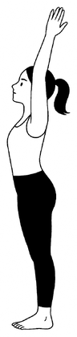
손 끝 하늘 자세
Ūrdhva Hastāsana
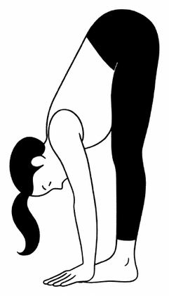
상체 숙인 자세
Uttānāsana
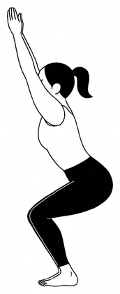
의자자세
Utkatāsana
전사 1 자세
Vīrabhadrāsana I
전사 2 자세
Vīrabhadrāsana II
전사 3 자세
Vīrabhadrāsana III
역전사자세
Viparīta Vīrabhadrāsana
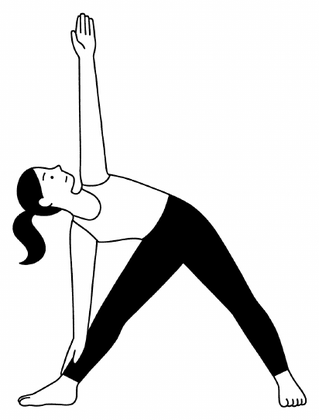
삼각 자세
Trikoṇāsana
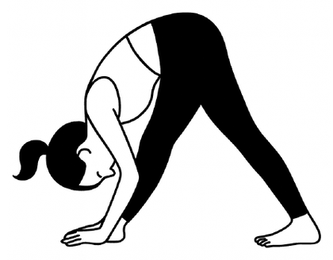
피라미드 자세
Pārśvottānāsana
이어서 읽으면 파르스바 + 욷타나 → 파르스보타나
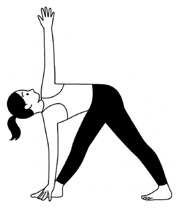
비튼 삼각 자세
Parivṛtta Trikoṇāsana
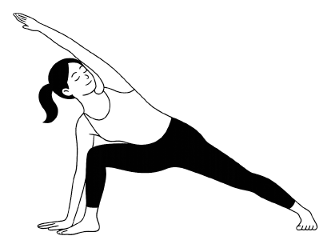
측각도 자세
Utthita Pārśvakoṇāsana
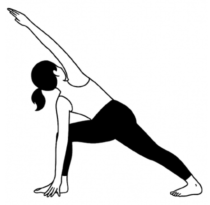
비튼 측각도 자세
Parivṛtta Pārśvakoṇāsana
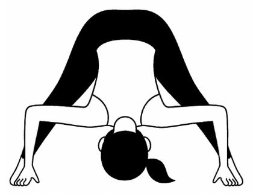
다리 넓힌 전굴 자세
Prasārita Pādottānāsana
이어서 읽으면 파다 + 욷타나 → 파도타나
댄서포즈
Naṭarājāsana
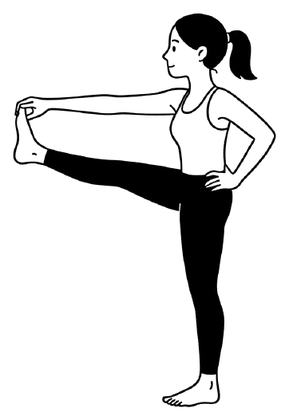
한국어 이름 없음
Utthita Hasta Pādāṅguṣṭhāsana A
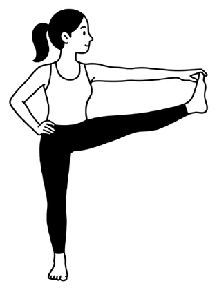
한국어 이름 없음
Utthita Hasta Pādāṅguṣṭhāsana B
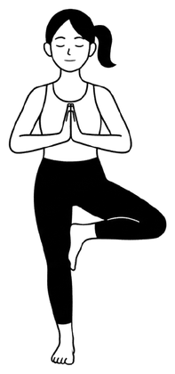
나무 자세
Vṛkṣāsana
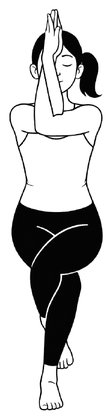
독수리 자세
Garuḍāsana
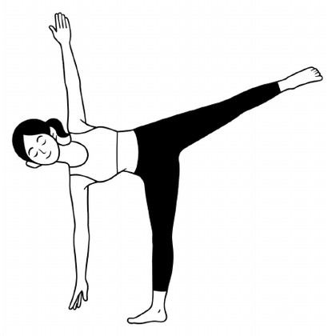
반달 자세
Ardha Candrāsana
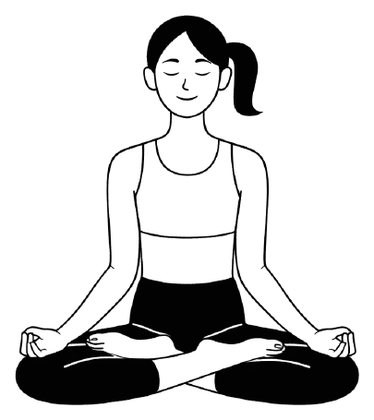
연꽃자세
Padmāsana
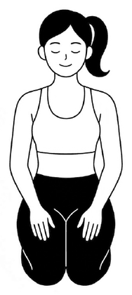
번개자세
Vajrāsana
영웅자세
Vīrāsana
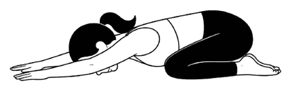
아기 자세
Bālāsana
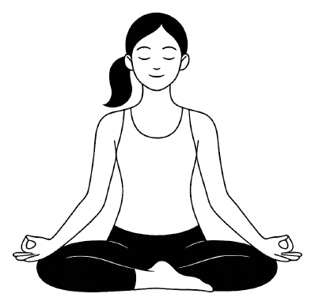
편안한 자세
Sukhāsana
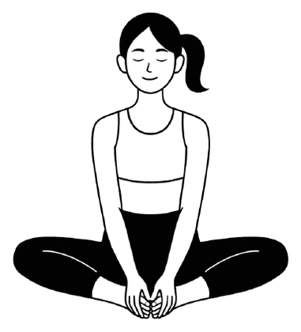
나비 자세
Baddha Koṇāsana
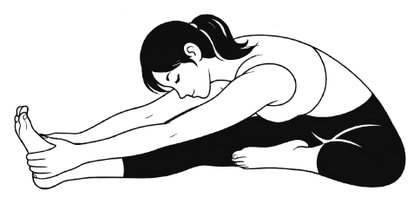
교재 표기: 자누시르아사나
한국어 이름 없음
Jānu Śīrṣāsana
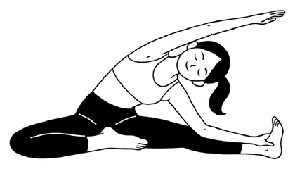
한국어 이름 없음
Parivrtta Jānuśīrṣāsana
한국어 이름 없음
Paścimottānāsana
이어서 읽으면 파스치마 + 욷타나 → 파스치모타나
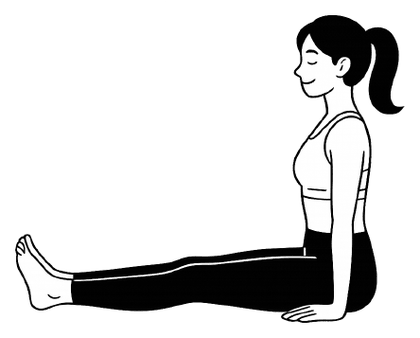
막대기 자세
Daṇḍāsana
한국어 이름 없음
Ardha Matsyendrāsana
교재 표기: 마르치아사나
한국어 이름 없음
Mārīcyāsana
화환자세
Malāsana
한국어 이름 없음
Samakoṇāsana
교재 표기: 우파비스타코나사나
한국어 이름 없음
Upaviṣṭa Koṇāsana
원숭이 자세
Hanumānāsana
배(보트) 자세
Nāvāsana
견상 자세 (다운독)
Adho Mukha Śvānāsana
쟁기자세
Halāsana
어깨서기
Salamba Sarvāṅgāsana
머리서기 자세
Salamba Śīrṣāsana
머리서기 자세 2
Śālamba Śīrṣāsana
코브라 자세
Bhujaṅgāsana
업독
Ūrdhva Mukha Śvānāsana
메뚜기 자세
Śalabhāsana
살라바 + 아사나 → 살라바사나 (교재 표기)
로우런지
Añjaneyāsana
비둘기 준비 자세
Eka Pada Rāja Kapotāsana
비둘기 자세
Eka Pada Rāja Kapotāsana
호랑이 자세
Vyāghrāsana
브릿지 포즈
Setu Bandha Sarvāṅgāsana
교재 표기: 푸르보타나아나사
한국어 이름 없음
Pūrvottānāsana
이어서 읽으면 푸르바 + 욷타나 → 푸르보타나
낙타 자세
Uṣṭrāsana
활 자세
Dhanurāsana
52쪽 어휘표 표기는 다누스(dhanus)
휠(wheel) 자세
Ūrdhva Dhanurāsana
52쪽 어휘표 표기는 다누스(dhanus)
와일드 띵
Camaṭkārāsana
널판지아사나
Santolānāsana
널판지 자세
Caturaṅga Daṇḍāsana
이어서 읽으면 차투르 + 앙가 → 차투랑가
사이드플랭크
Vasiṣṭhāsana
두루미 자세
Bakāsana
굽힌 팔: 까마귀 (Kakasana)
교재 표기: 비킬라아사나
소 자세
Bitilāsana
고양이 자세
Mārjārīāsana
한국어 이름 없음
Gomukhāsana
한국어 이름 없음
Śavāsana
참고(교재 밖) 뜻 출처: Mr. Yoga Sanskrit Glossary (mryoga.com), 산톨라나는 kavaalya.com, 안자네야는 위키백과 Anjaneyasana 항목
아사나와 어저스트먼트, 티칭 실습, 전사 2 묶음 빈야사 티칭, 프라나야마, 11월 1주차 과제를 정리했어요.
과제 표시는 11월 1주차 동영상 과제에 들어간 자세예요.
| 교재 | 자세 |
|---|---|
| 22p | 우티타 트리코나아사나과제삼각 자세 |
| 22p | 파르스보타나아사나과제피라미드 자세 |
| 23p | 파리브리타 트리코나아사나과제비튼 삼각 자세 |
| 24p | 파리브리타 파르스바코나아사나비튼 측각도 자세 |
| 34p | 사마코나아사나과제 |
| 35p | 우파비스타코나아사나과제 |
| 35p | 하누만아사나과제 제외원숭이 자세 |
핸즈온은 마지막 단계임을 꼭 기억할 것
세 가지를 이어서 티칭했어요.
교재 97p, 117p, 118~119p
다리가 양옆으로 열린 전사 2 묶음
8분
녹음선 자세 4개와 앉은 자세 3개의 정렬 포인트와 핸즈온 순서예요. 그림의 주황 번호는 손을 대는 순서예요. 직접 필기한 내용과 세부 내용은 다시 확인해 보세요.
언어 → 데모 → 도구 사용 → 핸즈온 순서. 말로 되는 것은 말로, 말로 잘 안 되는 것만 핸즈온.
자세 교정이 목적이 아님. 수련생이 몸의 감각을 알아차릴 수 있게 잡아 주는 정도로 진행.
핸즈온 대상은 핸즈온으로 자세 수정이 가능한 사람. 완전히 틀어진 수련생은 블럭으로 자세를 잡게 돕는다.
수련생 뒷다리를 양 허벅지 사이에 끼고 서서, 허벅지로 뒷다리를 지지한 뒤 핸즈온.
이 공간에서 나를 경험하고, 배우고, 스스로 느끼는 것.
초심자는 앞발 발날(안쪽) 앞에 블럭을 둔다. 블럭에 몸을 기대면 안 되고, 블럭을 손으로 미는 힘을 쓴다.
손을 바로 내려놓기 어려우므로 처음에는 정강이를 잡고, 그다음 발날 안쪽, 잘 쓰면 발날 바깥쪽에 손을 내려놓는다.
너무 틀어져 있는 사람은 핸즈온에 적합하지 않다. 핸즈온을 하려 하지 말고 블럭을 받쳐서 자세를 잡을 수 있게 돕는다.
블럭을 양손 아래에 짚게 한다.
앞 무릎만 살짝 구부리게 한다.
상체는 손바닥으로 약하게 방향성만 준다.
자세가 어려운 사람은 블럭을 발 안쪽에 두고 짚게 한다.
손 아래에 블럭을 두고 짚을 수 있게 한다.
골반이 바닥으로 떨어지는 분 중 무너질 것 같으면 핸즈온이 적합하지 않다.
상체 무게중심이 앞으로 쏠리는 경우가 많다.
블럭으로 좌골을 받쳐 세워서 중립을 찾게 한다.
무릎은 접어도 된다.
무릎관절은 잡지 않는다.
손은 무조건 뻗지 않아도 된다. 타이트한 사람은 오리엉덩이(소자세)까지만 한다.
허벅지가 처음부터 정면 바닥에 닿을 수는 없으므로 블럭을 최대한 활용한다. 1개로 안 되면 2~3개. 유연성이 낮은 남성은 볼스터도 활용하고, 볼스터를 쓰면서 손 짚을 곳이 필요하면 손 아래에도 블럭을 두고 짚게 한다.
골반 가동범위에 따라 정면을 완벽히 못 볼 수도 있다. 가능한 범위만큼만, 다치지 않게 주의한다.
삼각, 피라미드, 비튼 삼각, 비튼 측각도, 사마코나, 우파비스타코나, 하누만 7개 자세예요. 수업 필기를 바탕으로 큐잉, 도구, 핸즈온 순서로 정리했어요. 직접 필기한 내용과 세부 내용은 다시 확인해 보세요.
교재 78~84쪽과 칠판 내용이에요. 수업 필기를 정리한 내용이에요. 직접 필기한 내용과 세부 내용은 다시 확인해 보세요.
| 호흡 | ✓ | 한 줄 정리 |
|---|---|---|
| 카팔라박티교재에 없음 | ✓ | Kriya(정화 수련). 아랫배로 숨을 강하게 내뱉기 |
| 완전호흡디르가 · 79~80p | ✓ | 세 단계 호흡법. Lv0 수업에 적합 |
| 우짜이 호흡81~82p | 1:2 비율로 연습 | |
| 아눌롬 빌롬82~84p | ✓ | 1:2 비율, 좌우 코 번갈아, 왼코로 시작해 왼코로 끝 |
| 브라마리84~85p | 필기 없음 |
✓ 표시: 전통적 분류의 프라나야마가 아님 (긴 호흡 수련이라고도 함)
우짜이 호흡과 아눌롬 빌롬에 공통으로 적용
교재 표기: 아눌로마 빌로마 (Anuloma Viloma), 교호호흡
수리야 나마스카라 A 3번째 세트의 견상에서 바로 이어서, 오른쪽 다음 왼쪽 순서로 연습해요. 교재 118~119쪽
이미지를 누르면 크게 볼 수 있어요. 폰에서는 이미지를 길게 눌러도 저장할 수 있어요.
다리가 양 옆으로 열린 전사 2 묶음 큐잉이에요. 하이런지에서 홀드 없이 바로 이어서 견상까지, 한쪽을 두 장으로 나눴어요. 교재 120~121쪽
교재에는 오른쪽 큐잉만 있어요. 왼쪽은 오른쪽 문장에서 오른·왼만 바꾸고, 그림은 좌우를 뒤집어 만들었어요.
이미지를 누르면 크게 볼 수 있어요. 폰에서는 이미지를 길게 눌러도 저장할 수 있어요.
몸으로 돌아오기, 자연스러운 호흡과 연결하기, 주의를 정돈하기, 의도 세우기 순서로 읽어요. 단계 사이에는 공백을 조금 둬요. 교재 97~98쪽
이미지를 누르면 크게 볼 수 있어요. 폰에서는 이미지를 길게 눌러도 저장할 수 있어요.
선 자세부터 다운독까지 12개 자세의 정렬 포인트와 핸즈온 순서예요. 그림의 주황 번호는 손을 대는 순서예요.
자세를 만들게 한 뒤 눈으로 훑고, 줄 곳 하나만 정한다. 한 곳 하고 손을 떼고 빠져나온다. 몸 이곳저곳을 살피며 계속 잡아 주지 않는다.
모든 자세의 기본. 각 자세의 "정렬 포인트"(고개, 갈비뼈 등)는 말로 먼저 잡아 준다. 핸즈온은 골반처럼 말로 잘 안 되는 부분만.
손에 힘이 세면 학생 중심이 흔들린다. 관절은 잡지 않고, 무릎은 절대 손으로 움직이지 않는다 (위치는 말로).
몸의 방향을 알려 주어 감각을 깨운다. 학생이 스스로 알아차리게.
골반 중립과 몸통 정렬이 먼저. 손발 펼치기는 그다음.
근육의 방향을 잡아 주면 뼈가 따라 움직인다.
핸즈온 하는 사람의 서는 위치와 균형감도 함께 챙긴다.
버티고 스스로 고칠 수 있는 사람에게, 감각을 깨우는 용도로.
받는 사람은 손의 그립감 등을 솔직하게 피드백한다.
오른다리로 시작. 한 다리 균형은 왼다리로 서고 오른다리로 움직인다.
초보자에게는 권하지 않는다. 자세를 버틸 수 있고 스스로 고칠 수 있는 사람에게만.
가장 기본이지만, 가장 힘들게 느껴질 수 있는 자세.
중립이 잘 안 잡히면 소·고양이 자세로 골반 움직임을 먼저 느껴 보게 한다.
전사 1의 "골반 정면"은 매트 앞쪽, 전사 2의 골반은 매트의 긴 변을 향한다.
나이 드신 분도 어느 정도 연습할 수 있게 한다.
블록을 어깨 아래에 세우고 양손으로 잡는다. 블록에 체중을 싣지 말고, 밀어서 끌어올리는 느낌으로.
의자 자세(웃카타)에서 이어 간다고 생각하면 쉽다.
블록 2개를 어깨 아래에 나란히 두고 양손으로 짚은 뒤, 한 다리 균형부터 잡는다. 되면 블록 1개만 세우고 그 위에서 반달 자세를 해 본다.
무릎을 많이 구부려서 허벅지 뒤를 잡게 한다.
양손으로 블록을 들고, 내쉬며 팔다리를 함께 낮췄다가 복부 힘으로 다시 올리기를 반복한다.
골반을 맞추면서 척추와 고개를 같이 확인하고, 손을 떼면 빠져나온다. 몸 이곳저곳을 살피며 계속 잡아 주지 않는다.
의자, 전사 1·2·3, 반달, 막대기, 다운독 7개 자세예요. 자세를 고른 뒤 장면 버튼을 누르면 그 장면에서 멈춰 볼 수 있어요.
골반과 고관절, 엉덩이·허벅지 근육
그림은 대부분 오른쪽 다리예요. 앞에서 본 그림은 그림 왼쪽이 몸의 오른쪽이에요. 빨간색은 주인공 근육, 살구색 뼈는 움직인 뼈, 흐린 뼈는 움직이기 전 모습이에요. 직접 필기한 내용과 세부 내용은 교재와 한 번 더 확인해 주세요.
| 단어 | 쉬운 뜻 |
|---|---|
| 대퇴골 | 허벅지뼈 |
| 고관절 | 골반과 허벅지뼈가 만나는 관절 |
| 경골 / 비골 / 슬개골 | 정강뼈 / 종아리뼈 / 무릎뼈 |
| 볼기뼈 | 골반의 한쪽 뼈 (좌우 한 장씩) |
| 비구 | 대퇴골두가 들어가는 오목한 자리 |
| 기시 / 정지 | 근육이 시작하는 곳 / 끝나서 붙는 곳 |
| 굴곡 ↔ 신전 | 굽힘 ↔ 폄 |
| 외전 ↔ 내전 | 벌림 ↔ 모음 |
| 외회전 ↔ 내회전 | 바깥으로 돌림 ↔ 안쪽으로 돌림 |
| 가쪽 ↔ 안쪽 | 몸 바깥쪽 ↔ 몸 가운데쪽 |
| 편심성 / 등척성 / 동심성 | 길어지며 / 길이 그대로 / 짧아지며 힘을 냄 |
허리 옆을 누르면 뼈 능선(장골능)이 걸려요. 앞으로 따라가면 바지 앞주머니 근처에 ASIS, 뒤로 따라가면 엉덩이 위 보조개 근처에 PSIS가 있어요.
참고(교재 밖): PSIS는 ASIS보다 만지기 어렵고, 사람에 따라 허리 아래 보조개로 위치가 보이기도 해요(Kenhub, Physiopedia). ASIS는 교재 56쪽, 202쪽에도 나와요.
비구는 절구, 대퇴골두는 절굿공이 끝의 공이라고 생각하면 돼요.
| 이름 | 무엇을 잇나 | 하는 일 | 비유 |
|---|---|---|---|
| 근육 | - | 수축해서 힘을 만듦 | 엔진 |
| 힘줄 | 근육 ↔ 뼈 | 근육의 힘을 뼈에 전달 | 엔진과 바퀴를 잇는 벨트 |
| 인대 | 뼈 ↔ 뼈 | 관절을 지지하고, 지나친 움직임을 제한 | 안전 끈 |
교재 192쪽: 관절낭과 인대는 근육처럼 스스로 수축하는 조직이 아니에요.
옆에서 본 그림은 그림 오른쪽이 앞이에요. 흐린 다리는 움직이기 전이에요.
의자에 앉은 다리를 'ㄱ'자 막대라고 생각해 보세요. 허벅지를 밀대처럼 굴리면, 아래 정강이는 와이퍼처럼 반대쪽으로 움직여요. 아래 그림은 앉은 사람을 정면에서 본 모습이라 허벅지가 짧게 보여요.
의자에 앉은 오른다리, 정면에서 · 흐린 다리는 중립 · 그림 왼쪽이 몸 바깥쪽
교재 195쪽: 닫힌 사슬이라고 해서 모든 관절이 고정된다는 뜻은 아니에요.
오른쪽 옆에서 본 골반 · 그림 오른쪽이 앞 · 점선은 수평선
| 골반을 | 기울이는 데 기여할 수 있는 근육 |
|---|---|
| 앞으로 기울임 | 고관절 앞쪽의 굽힘 근육, 허리를 펴는 근육 |
| 뒤로 기울임 | 배 근육, 엉덩이 뒤쪽 근육 |
참고(교재 밖): 골반 30개를 잰 연구에서 ASIS-PSIS 각도가 0~23도로 사람마다 크게 달랐어요(Preece 등, 2008).
| 역할 | 뜻 |
|---|---|
| 주동근 | 주인공. 그 움직임을 주로 만듦 |
| 길항근 | 반대편. 반대 방향으로 작용하며, 늘어나 줘야 주동근이 일함 |
| 협력근 | 도우미. 힘을 보태거나 흔들림을 잡아 줌 |
| 의자자세 | 수축 | 근육은 |
|---|---|---|
| 천천히 내려앉기 | 편심성 | 길어지며 버팀 |
| 중간에서 머물기 | 등척성 | 길이 그대로 버팀 |
| 일어서기 | 동심성 | 짧아지며 들어 올림 |
교재 196쪽: 힙힌지로 천천히 내려갈 때 대둔근과 햄스트링이 속도를 조절한다면, 고관절을 펴는 근육이 길어지며 버티는(편심성) 역할로 설명할 수 있어요.
A, B는 옆에서 본 모습(그림 오른쪽이 앞) · 점선은 손목 높이 · 손 높이가 비슷해도 접히는 곳이 달라요
① 발 접촉 → ② 무릎 각도 → ③ 골반과 대퇴골의 접힘 → ④ 골반과 몸통의 관계 → ⑤ 진입과 복귀(들어가고 나오는 과정)
오른발로 서고 왼다리를 든 모습을 앞에서 봤어요. 주황 선은 양쪽 ASIS를 이은 선이에요. 서 있는 쪽 중둔근이 약하면 든 다리 쪽 골반이 처질 수 있어요.
교재 200쪽: 흔들림만 보고 중둔근이 약하다고 판정하지 않아요.
참고(교재 밖): 고관절을 굽힐수록 일부 엉덩이 근육의 돌림 방향이 바뀐다는 연구가 있어요(Delp 등, 1999).
참고(교재 밖): 대퇴골과 비구의 기울기는 사람마다 크게 다르고, 고관절의 안쪽·바깥 돌림 범위에 큰 영향을 줘요(Lerch 등, 2022).
교재 202쪽: 다른 조건이 같다면, 고관절을 펴고 무릎을 굽히는 쪽이 대퇴직근을 길게 해요. 장요근은 무릎을 지나지 않아서 무릎 각도와 상관이 없어요. 그래서 뒷무릎을 굽힌 런지에서도 앞쪽 근육이 모두 같은 방식으로 늘어난다고 설명할 수는 없어요.
참고(교재 밖): 거위발 점액낭염은 무릎 안쪽 통증의 흔한 원인이에요(StatPearls).
| 근육 | 무릎을 지나나 | 끝나는 곳 | 하는 일 |
|---|---|---|---|
| 장내전근 | 안 지남 | 대퇴골 뒷면 세로 능선(조선)의 가운데 1/3 | 모음. 자세에 따라 굽힘을 도움 |
| 대내전근 | 안 지남 | 대퇴골에 넓게, 무릎 위 내전근결절까지 | 모음. 앞부분은 굽힘, 뒷부분은 폄을 도울 수 있음 |
| 박근 | 지남 | 정강뼈 위쪽 안쪽 (거위발) | 모음 + 무릎 굽힘 |
교재 205쪽: 나비자세(무릎 굽힘)와 개각 자세(무릎 폄)는 둘 다 안쪽 허벅지가 당길 수 있어요. 하지만 무릎을 지나는 근육(박근 등)은 무릎 각도에 따라 늘어나는 정도가 다를 수 있어요.
단, 대퇴이두근 짧은갈래는 대퇴골에서 시작해 무릎만 지나요.
모두 오른다리, 뒤에서 · 그림 왼쪽이 몸 안쪽
빨간 선: 햄스트링(허벅지 뒤) · 초록 점선: 대퇴직근(허벅지 앞) · 옆에서 본 모습. 두 그림은 같은 비율로 그렸어요. 선이 길수록 더 늘어난 것이에요.
근육은 지나는 쪽이 벌어지면 길어지고, 접히면 짧아져요. 그래서 전굴에서 무릎을 살짝 굽히면 허벅지 뒤 당김이 줄 수 있어요. 앞쪽 대퇴직근은 반대로, 무릎을 굽히면 길어지는 쪽이에요.
교재 206쪽: 실제 전굴에서는 골반과 몸통도 함께 움직여요. 당김만 보고 짧다, 약하다를 확인할 수는 없어요.
1회차는 발에서 무릎, 허벅지로, 2회차는 손에서 손목, 어깨뼈로 올라갔어요. 3회차는 다리가 몸통에 붙는 곳, 골반과 고관절이에요.
골반은 고리, 고관절은 공(대퇴골두)과 소켓(비구). 연골, 윤활액, 비구순, 관절낭, 세 인대가 관절을 지켜요.
00~04 · 교재 190~193쪽
골반에 대해 대퇴골이 어디로 갔나로 이름을 붙여요. 돌림은 허벅지뼈 기준, 발이 바닥에 있으면 골반이 움직여요.
05~08 · 교재 194~195쪽
주인공, 반대편, 도우미. 편심성으로 버티기도 해요. 전굴에서는 골반과 대퇴골의 접힘을 봐요.
09~11 · 교재 196~198쪽
대둔근, 중둔근, 깊은 회전근, 장요근, 대퇴직근, 봉공근, 내전근, 햄스트링. "어느 쪽을 지나나? 무릎을 지나나?"부터 봐요.
12~18 · 교재 199~206쪽
| 지나는 쪽 | 하는 일 | 오늘 배운 근육 |
|---|---|---|
| 앞 | 굽힘 | 장요근 · 대퇴직근 · 봉공근 · 대퇴근막장근 |
| 뒤 | 폄 | 대둔근 · 햄스트링 · 대내전근 뒷부분 |
| 바깥 | 벌림 | 중둔근 · 소둔근 · 대퇴근막장근 (+ 봉공근) |
| 안쪽 | 모음 | 장내전근 · 대내전근 · 박근 |
| 뒤 (깊은 층) | 바깥 돌림 | 깊은 회전근 6개 · 대둔근 |
| 앞쪽 바깥 | 안쪽 돌림 | 소둔근 · 대퇴근막장근 · 중둔근 앞쪽 |
봉공근은 앞을 지나지만 벌림과 바깥 돌림에도 작용해요(교재 202쪽).
| 무릎을 안 지나요 | 무릎을 지나요 |
|---|---|
| 장요근 · 장내전근 · 대내전근 | 대퇴직근 · 봉공근 · 박근 · 반건양근 · 반막양근 · 대퇴이두근 |
고관절 굽힘근: 장요근 · 대퇴직근 · 봉공근 · 대퇴근막장근 (+ 장내전근, 대내전근 앞부분이 도울 수 있음)
허리 폄근: 척추기립근(230쪽) · 다열근(232쪽)
출처: 교재 숨쉬는고래 요가 TTC 12기 190~206쪽, 햄스트링 보완자료 · 3D 그림 BodyParts3D, © The Database Center for Life Science, CC BY 4.0 · 관절 단면·인대 그림 OpenStax, Anatomy and Physiology 2e, "Hip Joint" (한글 라벨로 바꿈) · Kenhub · Physiopedia · Preece SJ 등 (2008) · Delp SL 등 (1999) · StatPearls, Pes Anserine Bursitis · Lerch TD 등 (2022)
| 뼈 | 위치 | 개수 |
|---|---|---|
| 수근골손목뼈 | 손목 부근의 작은 뼈 | 8개 |
| 중수골손허리뼈 | 손바닥의 길이를 이루는 뼈 | 5개 |
| 지골손가락뼈 | 손가락을 이루는 마디뼈 | 14개엄지 2개, 나머지 각 3개 |
엄지의 손허리뼈(제1중수골)는 손가락뼈 개수에 들어가지 않는다.
참고(교재 밖): 주먹을 쥘 때 튀어나오는 손마디는 중수골의 머리(중수골두)다. 02의 원위 가로아치가 이 높이에 있다.
| 1회차 발과 비교 (1회차 교재) | 발 | 손 |
|---|---|---|
| 뒤쪽 작은 뼈 | 족근골 7개 | 수근골 8개 |
| 가운데 긴 뼈 | 중족골 5개 | 중수골 5개 |
| 발가락·손가락 | 지골 14개 | 지골 14개 |
| 근위 가로아치 | 손목뼈 높이의 가로 배열 |
|---|---|
| 원위 가로아치 | 중수골두(손허리뼈머리) 높이의 가로 배열 |
| 세로아치 | 손의 길이 방향 배열 |
이 구조들이 손바닥의 오목한 형태를 이루고, 물체나 지지면에 맞게 손의 형태가 달라지는 데 관여한다.
아치선은 방향과 높이를 안내하는 선이며, 근육·힘줄·힘·압력선이 아니다.
접촉 구역은 해부학적 아치 분류와 다르며, 균등 압력의 네 점이 아니다.
아치는 잡기·지지 과제에 따라 모양을 조절한다. 높은 아치를 고정하는 것이 지지의 목표는 아니다.
실습: 손바닥을 오목하게 했다 놓기, 두 손바닥을 가볍게 맞대기를 비교한다. 모양과 압력의 느낌을 구분한다.
| 움직임 | 교재 설명 | 필기 |
|---|---|---|
| 굴곡굽힘 | 손바닥 쪽으로 손목을 굽힘 | |
| 신전폄 | 손등 쪽으로 손목을 폄 | 다운독 동작 |
| 요측편위노쪽굽힘 | 엄지 쪽으로 손목을 기울임 | 엄지손가락 쪽 |
| 척측편위자쪽굽힘 | 새끼손가락 쪽으로 손목을 기울임 | 새끼손가락 쪽 |
교재 기준: 굴곡은 손바닥 쪽, 신전은 손등 쪽이다. 참고(교재 밖): 필기의 '아래·위'는 손바닥이 바닥을 향할 때 기준이다.
실습: 손가락을 느슨하게 두고 손목 굴신과 편위를 작게 비교한다.
| 요골 (노뼈) | 해부학적 자세에서 전완의 엄지 쪽 뼈 |
|---|---|
| 척골 (자뼈) | 해부학적 자세에서 전완의 새끼손가락 쪽 뼈 |
| 회외 (뒤침) | 손바닥이 앞을 향함. 두 뼈는 나란한 관계 |
| 회내 (엎침) | 손등이 앞을 향함. 노뼈가 자뼈 앞을 가로지름 |
요측 = 노뼈 쪽(엄지 쪽) · 척측 = 자뼈 쪽(새끼 쪽) · 수근 = 손목 · 굴근 = 굽히는 근육 · 신근 = 펴는 근육
→ 요측수근굴근 = 엄지 쪽으로 지나며 손목을 굽히는 근육 / 척측수근신근 = 새끼 쪽으로 지나며 손목을 펴는 근육
| 요측수근굴근 노쪽손목굽힘근 | 척측수근신근 자쪽손목폄근 | |
|---|---|---|
| 위치 | 전완 앞쪽 표층 | 전완 뒤쪽 표층 |
| 기시 | 상완골 내측상과 (위팔뼈 안쪽위관절융기) | 상완골 외측상과 (위팔뼈 가쪽위관절융기)와 척골 뒤모서리 |
| 지나는 곳 | 손목 앞, 손바닥·엄지 쪽 | 손목 뒤, 손등·새끼손가락 쪽 |
| 정지 | 주로 제2중수골 바닥 (손바닥 쪽) | 제5중수골 바닥 |
| 주요 기능 | 손목 굴곡 · 요측편위 | 손목 신전 · 척측편위 |
요측수근굴근은 상완골 내측상과에서 손목 앞을 지나 제2중수골 바닥으로 이어진다.
참고(교재 밖): 1회차 종아리 근육과 같은 원리로, 붙는 곳과 지나가는 길을 함께 보면 기능이 보인다.
신경가동술: 관절이 움직일 때 신경이 주변 조직 사이에서 미끄러지고 늘어나는 능력을 되찾는 데 도움을 주는 기술. 통증 완화, 부종 줄이기에 도움이 될 수 있음.
| 정중신경 | 요골신경 | 척골신경 | |
|---|---|---|---|
| 위치 | 팔꿈치 안쪽 신경 | 외측 팔꿈치 | 새끼손가락 쪽 |
| 도움 | 특히 골프엘보에 도움이 될 수 있음 | 테니스엘보에 도움이 될 수 있음 | |
| 손가락 | 손바닥에서 1, 2, 3번 (엄지~중지) | 손등에서 1, 2, 3번 | 손가락 4, 5번 |
아래 순서는 수업 필기를 바탕으로, 물리치료에서 쓰는 신경 가동 순서(ULNT)에 맞춰 알기 쉽게 정리했다.
표준 순서 참고: 어깨 내리기 → 팔꿈치 펴기 → 팔을 안쪽으로 돌리기(손등이 앞) → 손목을 굽혀 새끼 쪽으로 꺾기 → 엄지 접기
| 자세 | 교재 안내 |
|---|---|
| 벽 밀기 | 몸통은 비교적 세워 두고, 손은 편한 높이에서 벽에 접촉한다. |
| 벽 다운독 | 엉덩이를 뒤로 보내 몸통을 기울인다. 팔과 몸통을 억지로 일직선에 맞추지 않는다. |
| 고정된 높은 지지대 | 고정·미끄럼 방지부터 확인하고, 손바닥을 지지면에 편하게 댄다. |
| 테이블탑 | 손과 무릎의 접촉을 확인한다. 손목과 호흡 반응에 따라 선택한다. |
벽 밀기·벽 다운독, 고정된 높은 지지대·테이블탑은 각각 두 자세 중 편한 자세를 선택한다. 고른 자세 안에서 손 높이·거리·지지 시간 중 하나만 바꾼다. 무릎을 잠그거나 팔꿈치 끝범위를 밀지 않는다. 자세를 바꾼 비교와 같은 자세 안의 조건 비교를 구별한다.
견갑골(어깨뼈)은 흉곽 뒤의 납작한 뼈다. 근육층을 사이에 두고 흉곽을 따라 움직이며, 쇄골과 주변 근육이 함께 팔과 몸통의 관계를 조절한다.
| 내측연 | 척주 쪽 모서리 |
|---|---|
| 외측연 | 겨드랑이 쪽 모서리 |
| 하각 | 견갑골 아래쪽 끝 |
| 견갑극 | 견갑골 뒤면을 가르는 융기. 위아래 오목이 극상와·극하와 |
| 견봉 | 견갑극에서 가쪽으로 이어지는 돌출부 |
| 관절와 | 상완골두와 만나는 가쪽의 얕은 오목 |
요가블록을 양쪽 전완 사이에 끼우고, 무릎을 띄운 네발기기 자세로 해도 좋음
참고(교재 밖, 09·10과 연결): 네발기기에서 바닥을 밀어 날개뼈가 벌어지는 것이 전인, 가슴이 내려가며 날개뼈가 모이는 것이 후인이다(09). 전인의 대표 근육이 전거근이다(10).
| 움직임 | 무엇이 달라지나 |
|---|---|
| 거상 / 하강 | 어깨띠가 위로 / 아래로 이동 (높이 변화) |
| 전인 (내밈) | 견갑골이 흉곽을 따라 앞·가쪽으로 이동. 내측연이 척주에서 멀어지는 경향 |
| 후인 (뒤당김) | 견갑골이 흉곽을 따라 뒤·안쪽으로 이동. 내측연이 척주에 가까워지는 경향 |
| 상방회전 | 관절와가 더 위를 향하도록 회전. 하각은 가쪽으로 이동하는 성분 |
| 하방회전 | 관절와가 상대적으로 아래를 향하는 반대 회전. 중립 대비 하각이 안쪽으로 |
전인·후인은 흉곽의 곡면을 따라 움직이며 단순한 수평 이동과 다르다. 상방회전은 어깨띠 전체의 거상이나 견갑골 외회전과 같은 말이 아니다.
전거근(앞톱니근)은 흉곽 가쪽을 덮고 견갑골과 흉곽 사이로 이어진다.
| 기시 | 제1~8 또는 9갈비뼈의 바깥쪽 면 |
|---|---|
| 정지 | 견갑골 내측연의 늑골면(갈비면). 위각부터 아래각까지 붙으며, 등에서 보이는 뒷면 한가운데에 붙는 것이 아니다 |
| 기능 | ★ 전인 · 흉곽 위 지지와 조절 · 상방회전 기여 ★ |
특히 아래쪽 섬유가 아래각 부근에 전달하는 힘이 회전 협력에 중요하다. 벽을 밀 때 견갑골이 흉곽을 따라 이동하는 움직임과 팔을 올릴 때의 회전을 비교한다. 전거근은 견갑골의 지지뿐 아니라 이동과 회전에도 관여한다.
승모근(등세모근)은 목 뒤와 등 위쪽의 넓은 표층 근육이다. 상부·중부·하부는 이어진 한 근육의 서로 다른 섬유 방향을 구분한 것이다.
| 부분 | 기시 | 정지 | 기능 |
|---|---|---|---|
| 상부 | 외후두융기·상항선 안쪽·항인대 | 쇄골 가쪽 1/3 | 어깨띠 지지·거상·상방회전 협력. 팔 올림에서 자연스럽게 참여할 수 있으므로 어깨를 무조건 낮추도록 안내하지 않는다 |
| 중부 | 아래 경추·위 흉추 가시돌기 부근 | 견봉·견갑극 | 후인·견갑골 위치 조절. 팔 올림에서도 다른 근육의 당김과 균형 |
| 하부 | 중간·아래 흉추 가시돌기 부근 | 견갑극 안쪽 끝 부근 | 하강·후인을 도울 수 있음. 팔 올림에서는 전거근 등과 상방회전에 협력 |
하부 섬유는 아래 등에서 위·가쪽으로 올라가 정지에 닿지만, 견갑골에 전달되는 당김은 정지에서 기시 쪽인 안쪽·아래쪽 성분을 가진다. 섬유 경로를 따라가는 방향과 뼈에 작용하는 당김 방향은 같지 않다.
| 상부승모근 | 쇄골 가쪽 1/3의 당김이 어깨띠 연결을 통해 협력 |
|---|---|
| 하부승모근 | 견갑극 안쪽 끝 부근에서 안쪽·아래쪽으로 당김 |
| 전거근 | 내측연 갈비면의 여러 부위에서 흉곽을 감싸 앞·가쪽으로 당김 |
서로 다른 지점에 작용하는 힘이 단순한 위아래 이동과 다른 회전 결과를 만들 수 있다. 이 협력을 힘의 짝(force couple)으로 이해한다. 힘의 크기가 항상 같거나 회전축이 고정되어 있다는 뜻은 아니다.
협력이 같은 방향이라는 뜻은 아니다.
상방회전에서는 먼저 전거근·상부승모근·하부승모근의 협력을 확인한다. 중부승모근은 후인과 위치 조절로 구별한다. 실제 팔 올림에는 상완골·쇄골·견갑골의 여러 움직임이 함께 일어난다.
1회차는 발에서 무릎, 허벅지로 올라갔고, 2회차는 손에서 손목, 어깨뼈로 올라간다. 보는 방법은 같다.
손목뼈 8·손허리뼈 5·손가락뼈 14. 세 아치가 손바닥의 오목한 형태를 만들고, 바닥을 짚을 때는 접촉 구역을 관찰한다. 발에서 배운 구조를 손에서 다시 본다.
요약 01~03 · 교재 174~176쪽
손목은 굴곡·신전·요측편위·척측편위로 꺾이고, 전완은 회내·회외로 돌아간다. 꺾기와 돌리기는 다른 움직임이다.
요약 04~05 · 교재 176~178쪽
팔꿈치 안쪽에서 시작해 손목 앞·엄지 쪽을 지나면 굽히고 엄지 쪽으로 기울인다. 바깥쪽에서 손등·새끼 쪽을 지나면 펴고 새끼 쪽으로 기울인다.
요약 06 · 교재 179~180쪽
한 자세 안에서 조건 하나만 바꿔 손·손목 반응을 본다. 수업에서는 신경가동술(정중·요골·척골신경)도 함께 배웠다.
요약 07 · 교재 181쪽
견봉·관절와·내측연·하각으로 방향을 잡고, 거상·하강·전인·후인(이동)과 상방·하방회전(회전)을 구별한다.
요약 08~09 · 교재 182~184쪽
전거근은 전인과 지지, 승모근은 부분마다 정지와 역할이 다르다. 서로 다른 방향의 당김이 함께 상방회전에 협력한다(힘의 짝).
요약 10~12 · 교재 185~188쪽
어떤 구조인가? → 힘이 어떻게 전달되나? → 어떻게 움직이고 버티나?
손을 바닥에 짚는 자세(다운독, 테이블탑, 푸시업)에서는 손의 아치와 접촉, 손목의 꺾임, 견갑골의 지지가 함께 일한다.